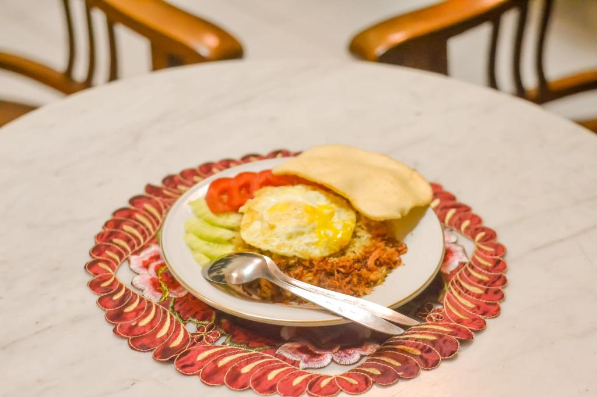

Chat Pak Dodi
Chat Pak Dodi

01 / Signature Ritual
schedule
Best at 07:00–09:00
Authentic Breakfast
Sarapan rumahan khas Yogyakarta yang dimasak segar setiap pagi oleh Ibu Andari, dengan menu yang hangat dan personal seperti di rumah sendiri.
- donePilihan menu lokal berganti sesuai bahan segar harian.
- doneDisajikan di area pendopo dengan suasana pagi yang tenang.
- doneBisa disesuaikan ringan untuk tamu yang berangkat lebih awal.